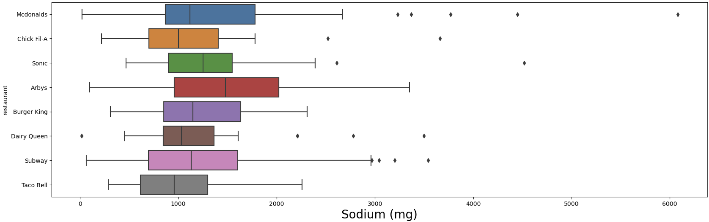
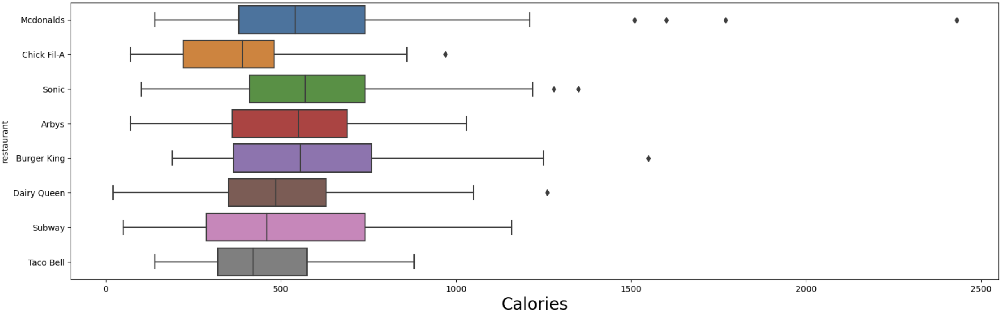
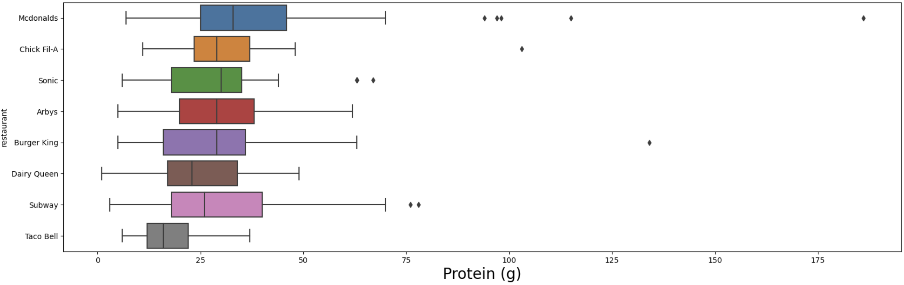
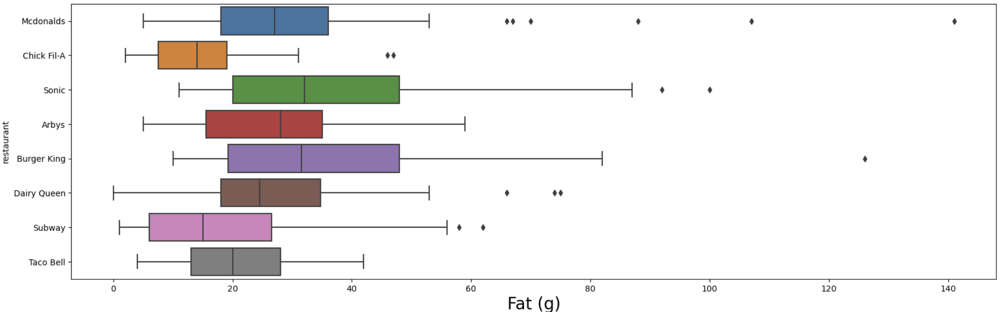
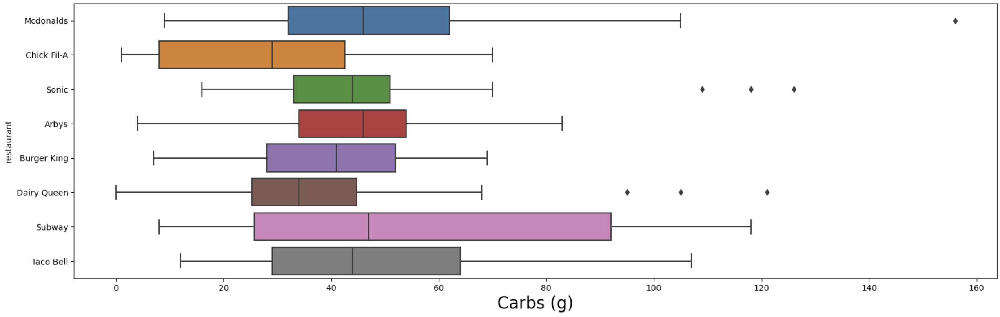

Which Fast Food Place is Best for Your Diet Type?
Have you ever found yourself paralyzed by the simple question “Where do you want to eat?” If you’re like many people these days, The very thought of deciding where to eat can send a shiver down your spine. In your defense, how are you supposed to chose? This one, seemingly easy question opens up a barrage of many others: Do I want sitdown or fast food? Chinese or Mexican? Will their food fit with my diet?! With about 50,000 different fast food chains and over 200,000 locations spread out across the US, It can feel impossible to choose.
There are seemingly infinite options, and that’s not even to mention whether or not the food is even good for you! The food we put into our bodies have drastic effects on our physical health. If we aren’t meeting our bodies dietary needs, we can be putting our bodies at some serious risk.
Today, however, I aim to alleviate some of that worry. I am going to compare eight of the most popular fast food chains and tell you how they stack up against each other and which ones fit best for your specific dietary needs. You got low blood sugar? High colesteral? Are you just starting in the gym and want to find out which fast food place will give you the biggest muscles? No problem! These restaurants have just what you need, all we need to do is a little digging to figure out which one is right for you!
My Data
--Cycling restaurant names--
There are thousands upon thousands of different restaurants in just the U.S. alone, and obviously I cannot compare all of them in this one analysis. For this reason I will be going over just 8 of some of the most popular restaurants in the U.S. — Taco Bell, Subway, Burger King, Mcdonalds, Arby's, Sonic, Dairy Queen and Chick Fil-A. For this Analysis I used a dataset made by openintro.org that contains almost the entire menu (not including some sides like fries) from these eight restaurants. I also cross referenced some of the items on this dataset with that of the munue from each restaurants official website to confirm its legitemacy and fill in any gaps.
As society Progresses, so to does the reach of these powerful fast food chains. With fast food becoming one of the most popular ways for people to get their daily meals, It becomes more and more important to figure out which of these restaurants is the best fit to eat at with their THOUSANDS of locations across the U.S.
My Analysis
Now while there are hundreds of different kinds of diets that one could choose from, again, I cannot fit them all in this analysis. For this reason I have chosen just five of the most common and simplest diets to discuss. I will compare these restaurants and tell you which ones best fit these Macronutrient based diets.
Low Sodium
Sodium is a very important nutrient for your body, It maintains the balance of your bodily fluids and keeps muscles and nerves running smoothly. Many people, however, consume far too much sodium or have medical conditions that limit the amount of sodium they can safely consume. A low sodium diet is great for anyone looking to simply cut back on their intake of salt or those with serious conditions such as high blood pressure, kidney disease, and many types of heart problems.
Taco Bell is the best option for a low sodium diet as it has the lowest median sodium for all of its items at 960mg and its lowest being its Fresco Crunchy Taco with 290mg. That means that half of Taco Bell's items contain between 290mg and 960mg of sodium. Taco Bell, however, does not habe the lowest sodium options. Dairy Queen and Mcdonald's have the lowest sodium options of all eight restaurants being it's DQ's side salad at 15mg of sodium and Mcdonald's Premium Asian Salad w/o Chicken at 20mg of sodium.

Adversely, Arby's, Sonic, and Burger King seem to be the worst restaurants to visit for a low sodium diet as they both have the highest median sodium contents for their items being 1480mg, 1250mg, and 1150mg of sodium respectively. this means that HALF of each of their menus contain more sodium than that. Mcdonalds is also a very bad option as seen in the box plot below because it has few of the highest sodium options available.
Low Calorie
Low calorie is one of the most popular diet types there is. It is the easiest to keep track of and it is highly effective. Whether you are trying to lose some weight or you are trying to put some on, It is very easy to count your calories and stay within a calorie defecite or surplus depending on your goals. Low calorie diets can also help blood sugar and cholesterol levels and help you feel overall more healthy.
Chick-Fil-A is the best option for a low calorie diet as it has the lowest median calories for all of its items at 390cal and its lowsest calorie option being it's Four Piece Grilled Chicken Nuggets with 70cal. Thjis means that half of Chick-Fil-A's options lie between 70 and 390 calories. That is less than a fifth of the recommended 2000cal/day for most people. Yet again, however, Dairy Queen's side salad remains the best option at only 20 calories.

Once again, Sonic and Burgur King with the addition of Mcdonald's, this time, seem to be the worst restaurants to eat at for a Low calorie diet. Sonic and Burger King have the highest median calorie counts of any of the restaurants with 485cal and 570cal respectively. Mcdonald's actually had the top three highest calorie options, as seen in the boxplot below, with the worst one being it's 20 piece Buttermilk Crispy Chicken Tenders with a whopping 2430 calories! that far excedes the recomended 2000 cal/day, but it may be good for trying to put on weight if that was your goal.
High Protein
High protein is another very popular diet type. It is most common among people trying to build muscle as it is one of the most important nutrients involved in muscle repair. Having extra protein also helps repair the body in general from sickness and injuries and, much like calories, it is easy to keep count of.
McDonalds is hands down the best option for a high protein diet with both the highest median protein count in its items at 33g and the highest protein count in an item being its 20 piece Buttermilk Crispy Chicken Tenders at a whopping 186g of protein! this is more than enough protein for anyone trying to put on some muscle as the recommended amount of protein per day for building muscle is 1-2g of protein per pound of body weight. The two runnerups are Burger King and Chick-Fil-A with the American Brewhouse King at 134g of protein and the 30 Piece Chicken Nuggets at 103g of protein.

The worst option by far is Taco Bell with the lowest median at 16g and the lowest max protein count being its XXL Grilled Stuft Burrito - Chicken with 37g of protein. Granted, that isn't a bad amount of protein in a single meal, but it still pales in comparison to it's competitors. The box plot below also shows the incredible 5 options from Mcdonald's that are over 90g of protein!
Low Fat
Fat has always had a bad rap as people have the common misconception that ingesting fat leads to, well, becoming fat. This, ofcourse is not the case, just the fault of poor naming. A low fat diet, however, can be very benifitial for some serious health conditions such as some heart diseases, type 2 diabetes, obesity, and even multiple Sclerosis.
Chick-Fil-A and Subway are the best options for a low fat diet with the median fat amounts being 14g and 15g of fat. once again, however, Dairy Queen steals the show with its Side Salad at 0g of fat followed closely by Subway's Veggie Delight Salad at 1g of fat.

For the normal 2000cal/day, the average person should consume 44-78g of fat. With this, the worst restaurant for a low fat diet would be, by far, Burger King with the highest median fat count of 31.5g and highest fat option being the American Brewhouse King at 126g of Fat. A close second for "worst" is Subway with a median fat count of 32g of fat and its worst option at 100g of fat being the Garlic Parmesan Dunked Ultimate Chicken Sandwich. And, as seen in the boxplot, Mcdonald's is yet again one of the worst for this diet too as it has the highst fat option with 3 of its options lying over 90g!
Low Carbohydrate
Carbohydrates are very important nutrients that our body needs to energize itself, this being said, too much can definitly be a bad thing. A low carb diet is best for people with cardiometabolic diseases such as type 2 diabetes and nonalcoholic fatty liver disease.
Chick-Fil-A and Dairy Queen are the best options for a low carb diet with the lowest median carbohydrate counts of 29g and 34g respectively. They also both have the lowest carb options being DQ's regular cheese curds with 0g of carbs and Chick-Fil-A's 4 Piece Grilled Chicken Nuggets with only 1g of carbs

The worst options for a low carb diet are Subway with the highest median carb count of 47g and a tie for second between Mcdonald's and Arby's with a median of 46g of carbs. Yet again, however, Mcdonald's has the highest carb option and over a quarter of its options are contain more than 60g of carbs!
My Answer
For The diets covered, Chick-Fil-A and Dairy Queen seem to be the best options with the exceptions of Taco Bell being a little better for a low Sodium diet and Mcdonald's being IMMENSELY better for a high protein diet with its whopping 186g of protein item. In spite of this, DQ and Chick-Fil-A both have low sodium options and High protein items that make up for this disperity. Overall, Chick-fil-A and Dairy Queen are the unofficial winners of this competition. Whether you are fighting with type 2 diabetes or you just want a great post-workout meal to repair your muscles, these two restaurants have the best options to fulfill your needs.